Siconos Numerics component
Release Information
| Project: |
Siconos |
| Internal Release Number: |
1.0 |
| Last update: |
September 15, 2005 |
| Related Documents: |
|
| What for? |
Low-level algorithm for Numerical computing
|
| Feature sets: |
F-1.001 to F-1.020 |
| Depencies: |
Lapack, Blas, Lapack++.
|
| Sources directory name |
Numerics
|
Lapack
It provides routines for solving systems of simultaneous linear
equations, least-squares solutions of linear systems of equations,
eigenvalue problems, and singular value problems. The associated matrix
factorizations (LU, Cholesky, QR, SVD, Schur, generalized Schur)
are also provided, as are related computations such as reordering of the
Schur factorizations and estimating condition numbers.
Dense and banded matrices are handled, but not general sparse matrices. In all areas,
similar functionality is provided for real and complex
matrices, in both single and double precision.
For more details, see
http://lapackpp.sourceforge.net/.
NSS pack
LCP problem definition
Let M be a given nxn matrix, and let q be a given n vector.
The linear complementary problem is to find vectors z and w
such that
:
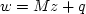
(1)
Here, (zi,wi) is a pair of complementary variables. A solution (z,w) to
the above system is called a complementary basic feasible solution if
(z,w) is a feasible solution to (1) and (2) and if one variable of the
pair
(zi,wi) is basic for i=1..n.
Notes:
A Numerical vector that satisfies all the constraints and restriction
in the problem is said a feasible solution.
Consider the following system of linear equality constraints
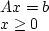
where A is a given matrix of order mxn, m the rank of A.
A basis B for the first equation
is a square matrix consisting of m columns of A which is
nonsingular; and the column vector of variables Xb associated with
the columns in B, arranged in the same order, is the basic vector
corresponding to it.
NCP problem definition
The aim of generalized Non-smooth Newton methods is to provide
numerical solutions of systems of non smooth equations of the form :
H(x) = 0
where 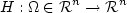
is locally Lipschitz on the open set .
If the function H is differentiable on , classical
Newton methods and its variants may be used to solve the equation above
and several theorem of local convergence may be formulated. The non
differentiability of H gives rise to a lot of complications that
invalidates the classical methods.
Relay problem definition
The relay system can be written as a LCP by introducing extra variables
and using the convex analysis formalism it can synthetically be written
as follows:
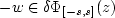
By extension the set [-s,s] is considered for vector valued problems
as the Cartesian product of intervals,
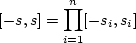
Set 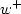 and 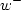 the
positive and negative part of w,
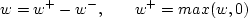
and 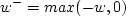
We introduce two extra variables
defined as follows:
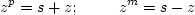
such that 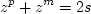
Coulomb´s frictional contact problem definition
The Coulomb friction law links the tangential velocity at contact to
the tangential reaction via a relay type relationship. But the
threshold depends on the normal contact reaction via a friction
coefficient 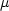. When unilateral contact and
friction are coupled we get the following system to solve (at least for
a 2D modeling):
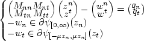
Subscript n designates normal component
and subscript the tangential one.
In a three-dimensional modeling the situation is quite complicated
because the generalized interval
[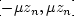]
has to be replaced by the Cartesian product of the two-dimensional
disks,
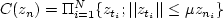
.
Solving routines
NSS pack provides solvers for the previous problems: basics lcp solvers
for lcp problems, and extended solvers for relay and frictional contact
problems.
ODE pack
It consists of nine solvers, namely a basic solver called LSODE and
eight variants of it - LSODES, LSODA, LSODAR, LSODPK, LSODKR, LSODI,
LSOIBT, and LSODIS. The collection is suitable for both stiff and
non stiff systems. It includes solvers for systems given in explicit
form, dy/dt = f(t,y), and also solvers for systems given in linearly
implicit form, A(t,y) dy/dt = g(t,y). Two of the solvers use general
sparse matrix solvers for the linear systems that arise. Two others use
iterative (preconditioned Krylov) methods instead of direct methods for
these linear systems. The most recent addition is LSODIS, which solves
implicit problems with general sparse treatment of all matrices
involved.